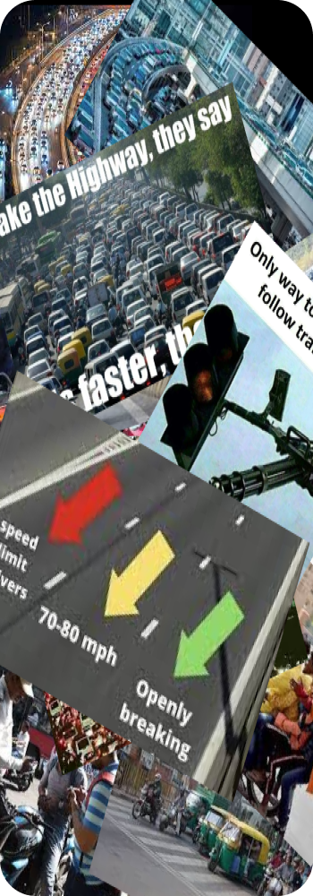

Imagine driving through a puzzle of traffic rules - it's like being in a game where the signs are playing
hide-and-seek. One moment, you're slowing down for a yield sign, not sure who you're supposed to yield to.
It's like the sign is teasing you, making driving feel like a playful adventure.
Then there's the speed limit confusion. In one area, it feels like you're crawling at a snail's pace, and
suddenly, you're on a road where you're supposed to go super fast. It's like a game where the rules change
as much as the weather - 30 mph turns into 60 mph in the blink of an eye.
Turn signals are a bit like secret codes everyone's trying to figure out. You signal left, thinking you're
about to turn, but the driver behind you mysteriously turns right. It's a bit like a dance where everyone's
doing their own moves, set to the soundtrack of honking horns.
Trying to park is another adventure. It's like watching a funny show as people try to slide into tight spots.
Bumpers might kiss, and there's screeching like in the movies. Parking becomes this funny dance where the curb
becomes an unexpected partner.
Traffic lights are like colorful bosses of the streets. Red means stop, green means go, and yellow means either
hit the gas or risk stopping awkwardly in the middle of the road. It's like a dance where we all try to follow
the rules, but sometimes it feels like we're dancing to a song that keeps changing.
In this funny world of traffic rules, where signs play hide-and-seek, speed limits are like riddles, and turn
signals act like they're playing a guessing game, humor helps us get through it. So, the next time you're feeling
confused by the traffic rules, just remember, we're all in this funny game together, trying to figure out the
twists and turns of the road.
Traffic Rules
0 Likes
By AviLOL
